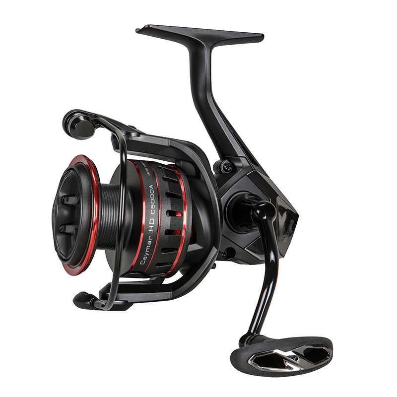

ReelCalc Reel Setup Guide
Okuma Ceymar HD 3000 Line Capacity & Reel Setup Guide
If you are setting up the Okuma Ceymar HD 3000 for general freshwater lure fishing with extra line reserve, its 8 lb / 200 yards mono rating is a useful starting point. Its DLC-coated Even Flow line roller is designed to reduce line friction, while the rotor brake keeps the rotor from turning during a cast. The calculator below is already set to this reel, whether you want a full spool of main line or backing under a working section.